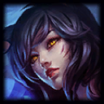

Comparativo de Tabletas Rugged
14 modelos en tres rangos de precio: ficha técnica por equipo, tablas comparativas con puntuaciones para público no técnico y recomendación final por rango.
SoloQ Challenge · Premios vs Salario Mínimo
El ranking completo de ganadores con sus fotos y premios, y cuántos días de salario mínimo tomaría ganar cada cifra en México, Chile, Colombia y Argentina.
 Low Elo vs High Elo
El corte por LP, no por gente
Vertical 9:16
Low Elo vs High Elo
El corte por LP, no por gente
Vertical 9:16
Low Elo vs High Elo · El corte por LP
La distribución de rangos como campana y como edificio, el camino Hierro→Challenger a escala real por servidor, y por qué llegar a Master es apenas la mitad del viaje.
 ORNN · 9 AÑOS
Aniversario del herrero
Vertical 9:16
ORNN · 9 AÑOS
Aniversario del herrero
Vertical 9:16
Ornn cumple 9 años
El one trick coreano con 7 millones de puntos, la sequía de skins, el malentendido con Anivia y la skin que nació como burla en Reddit. Diseñada para usarse como apoyo visual en video vertical.
Urgot cumple 16 años
El OTP con 13.7 millones de puntos atorado en Plata, el rework que lo salvó, la sequía de 6 años y medio sin skins, y el verdugo que acabó del lado del condenado.
Talon cumple 15 años
El OTP Diamante con 12.4 millones de puntos, el top 15 mundial lleno de latinos, el rework que le dio el salto de paredes y la sequía de 5 años que terminó justo con él.
Reporte semanal · Semana 34
19 h 45 m en 15 issues del 18 al 24 de agosto de 2026, directo de los worklogs de Jira: la localización de Zouk Tokio al japonés, siete issues finalizadas y ocho clientes atendidos.

Los campeones con más skins
El triple empate que se rompe al descontar bóveda y prestigio, los collages completos de Lux, Ahri y Miss Fortune, y el tarjetazo: una sola skin de Ahri que cuesta casi el triple que las 16 de Lux juntas.